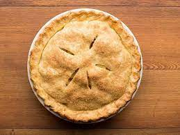

Pie

Wrong pie recipe
Don't even bother. No pie will come from this, just pastry disappointment.
Ingredients
- 350g plain flour
- 20g caster sugar
- 1 large egg, lightly beaten with 2 tbsp cold water
Preparation
- Using your fingers, work the butter into the dry ingredients until it resembles yellow corn meal mixed with bean sized bits of butter.
- To make the pastry in a food processor, with the machine fitted with the metal blade, pulse the flour, sugar and salt until combined
- Form the dough into a disk, wrap in clingfilm and refrigerate until thoroughly chilled, at least 1 hr.